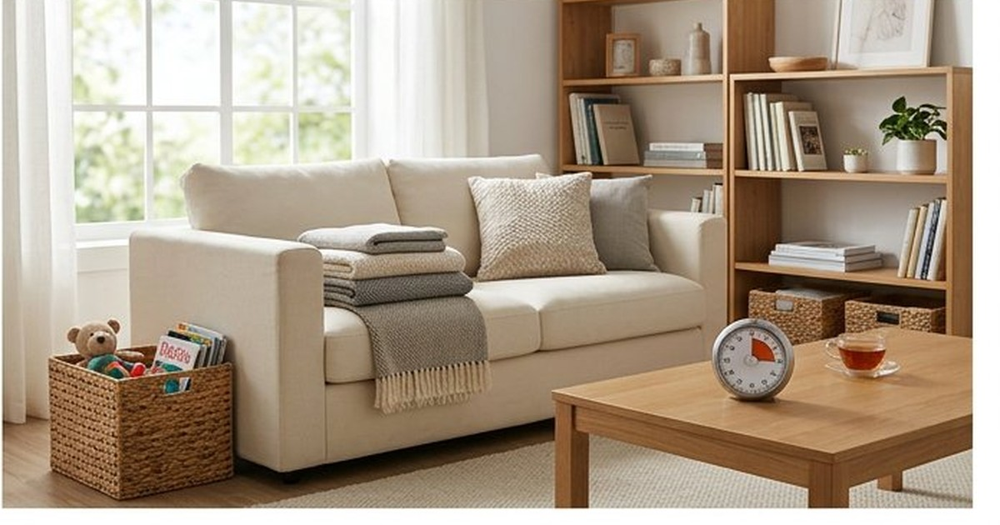
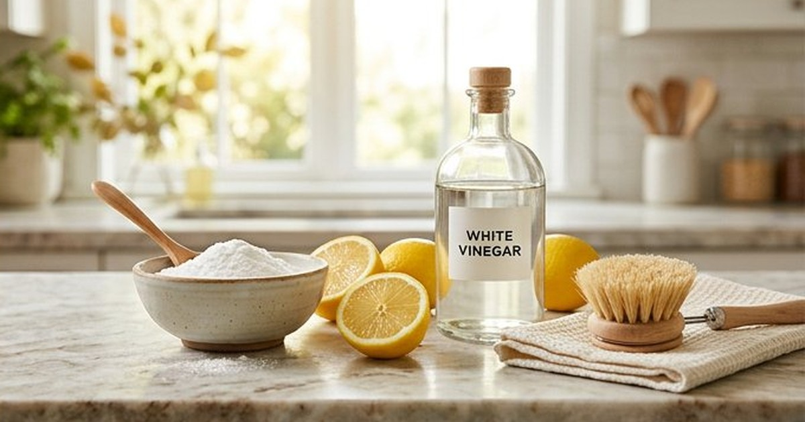
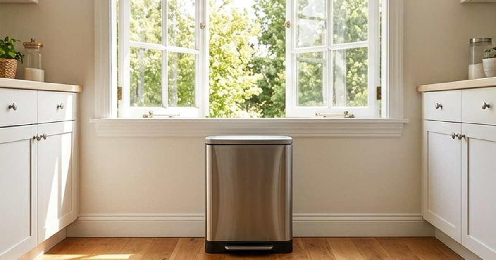
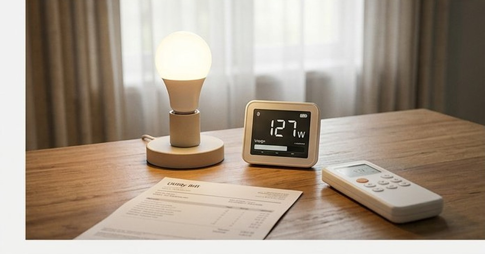

نصائح منزلية
ترتيب المنزل في 15 دقيقة يوميًا: خطة عملية
خطة عملية لترتيب المنزل في 15 دقيقة يوميًا فقط: جدول أسبوعي، قواعد ذهبية، وأدوات تساعدك على الحفاظ على ترتيب البيت بصورة أسهل.
6 وصفات تنظيف طبيعية وفعالة باستخدام الخل وبيكربونات الصودا والليمون: تنظيف الزجاج، إزالة البقع، تلميع الخشب، وتعقيم الأسطح.

التنظيف الآمن يبدأ بتحديد السطح ونوع الاتساخ، ثم استخدام أقل منتج ينجز المهمة واتباع تعليماته. الماء وسائل الجلي يكفيان لكثير من الأسطح اليومية. الخل حمضي وقد يضر الرخام والحجر الطبيعي، وخلط الخل مع مبيّض الكلور خطر لأنه قد يطلق غازًا سامًا. لا تخلط منتجات التنظيف معًا إلا إذا نصت الشركة المصنّعة صراحة على ذلك.
| السطح أو المهمة | الخيار الأبسط | تنبيه مهم |
|---|---|---|
| أسطح المطبخ اليومية | ماء دافئ وسائل جلي ثم التجفيف | اتبع تعليمات مادة السطح |
| الزجاج والمرايا | منظف زجاج أو محلول مخفف مناسب | لا تستخدم الخل على الحجر المحيط |
| الرخام والحجر الطبيعي | منظف متعادل الحموضة | تجنب الخل والليمون |
| الدهون المتراكمة | مزيل دهون مناسب مع وقت تماس | اختبره في مساحة مخفية |
| التعقيم بعد مرض | مطهر مسجل وفق ملصق المنتج | التنظيف يسبق التعقيم |
قبل انتشار المنظفات الكيميائية باهظة الثمن، كانت ربات البيوت ينظفن بيوتهن بمواد بسيطة ومتوفرة، وبنتائج ممتازة. الخل وبيكربونات الصودا والليمون مواد منزلية مفيدة في مهام محددة، لكنها ليست مناسبة لكل سطح ولا تصبح آمنة لمجرد أنها طبيعية. اختر المادة وفق السطح واتبع احتياطات السلامة.
اخلط كوبًا من الماء مع كوب من الخل الأبيض وملعقة صغيرة من سائل غسيل الصحون في زجاجة رذاذ. رشّ على الزجاج وامسح بقطعة قماش لا تترك وبرًا (قطعة قديمة من ملابس القطن مثالية). ستحصل على زجاج لامع بدون خطوط، ودون الحاجة إلى منظف متخصص في هذه المهمة.
للتعامل مع رائحة البالوعة، أزل البقايا الظاهرة ونظف المصفاة واتبع تعليمات صيانة الأنبوب. خلط بيكربونات الصودا بالخل يسبب فورانًا لكنه يعادل المادتين ولا يُعتمد عليه لفتح انسداد حقيقي. عند استمرار البطء استخدم أداة ميكانيكية مناسبة أو فنيًا.
اخلط بيكربونات الصودا مع قليل من الماء حتى تحصل على معجون سميك. ضعه على البقع العنيدة في الأحواض، البوتاجاز، أو بين بلاطات السيراميك، واتركه 10 دقائق ثم افركه بفرشاة ناعمة. يعمل هذا المعجون كمنظف كاشط لطيف لا يخدش الأسطح.
الليمون مضاد طبيعي للبكتيريا ورائحته منعشة. اقطع ليمونة نصفين، واغمس النصف في الملح، وافرك به لوح التقطيع الخشبي أو حنفيات المطبخ. بعد ذلك اشطف بالماء وستلاحظ لمعانًا ورائحة نظيفة. هذه الطريقة فعالة جدًا في تعقيم ألواح التقطيع التي يتراكم عليها البكتيريا.
اخلط نصف كوب من زيت الزيتون مع ربع كوب من الخل الأبيض. اغمس قطعة قماش ناعمة في الخليط وامسح بها الأثاث الخشبي. الزيت يرطب الخشب ويلمعه، بينما الخل يزيل الأوساخ. استخدم كمية صغيرة وتذكر أن القليل يكفي.
اغلِ قشور البرتقال أو الليمون مع عود قرفة في قدر صغير على نار هادئة؛ ستملأ رائحة عطرة المنزل كله خلال دقائق، بدون معطرات الجو الكيميائية التي قد تسبب الحساسية.
المواد المنزلية قد تنجح في مهام بسيطة، لكنها ليست أفضل أو أكثر أمانًا في كل الحالات. الملصق ونوع السطح والتهوية أهم من وصف المنتج بأنه طبيعي. ابدأ بخلطة واحدة هذا الأسبوع وجرّبها بنفسك، وستكتشف أن بيتًا نظيفًا لا يتطلب بالضرورة مواد باهظة الثمن.
رُوجعت المعلومات العامة في هذا المقال بالاستناد إلى المصادر التالية. الروابط الخارجية قد تُحدّث محتواها بمرور الوقت.

خطة عملية لترتيب المنزل في 15 دقيقة يوميًا فقط: جدول أسبوعي، قواعد ذهبية، وأدوات تساعدك على الحفاظ على ترتيب البيت بصورة أسهل.

طرق عملية لتقليل الروائح الكريهة في المنزل: تحديد المصدر، تنظيف المطبخ والحمام، تحسين التهوية، ومتى تحتاج إلى فني.

خطوات عملية لتقليل استهلاك الكهرباء في المنزل عبر قياس الاستهلاك وضبط التكييف والإضاءة والغسيل والأجهزة دون وعود توفير مبالغ فيها.